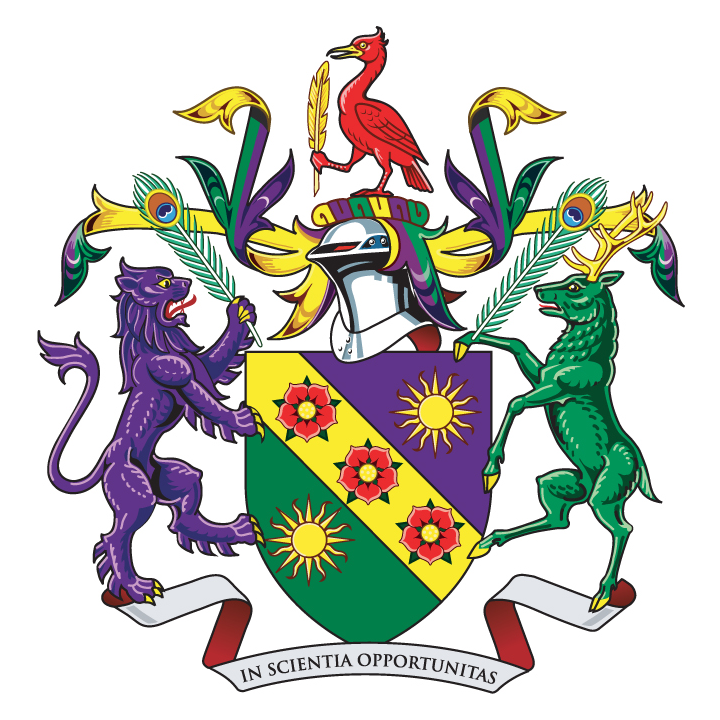
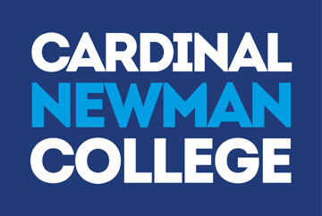
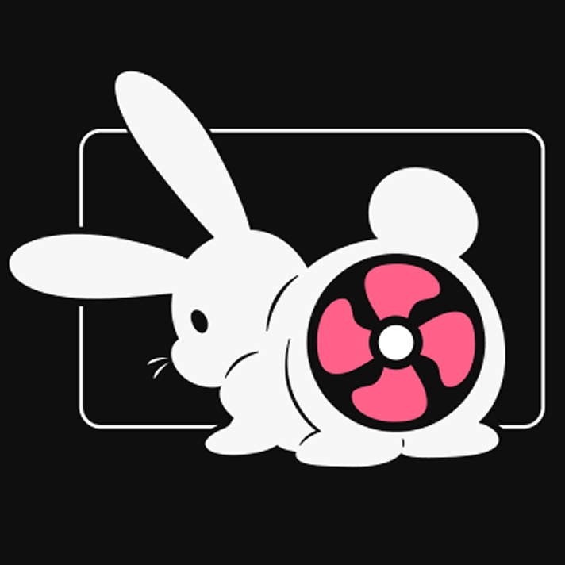
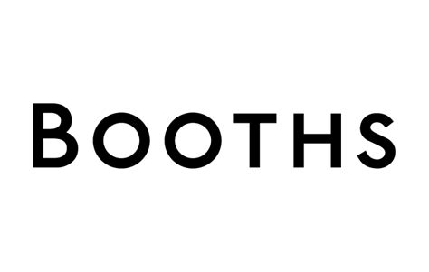
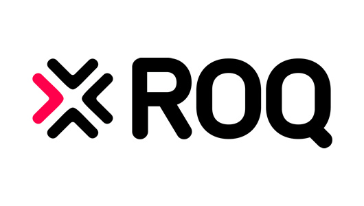

About Me
I'm William Georgeson. I am 20 years old, currently a CS Student studying at Edge Hill University,
Ormskirk. I have been programming since 2016.
I am abit of a data horder and like to collect and manage large amounts of it from images to
literature to old retro TV Shows that would otherwise go extinct without people like me. I have used
Linux for years and know the bash terminal very well.
I started programming in Scratch at a very early age learning it in IT classes in High School and
then taking it outside the classroom to further develop my understanding of Programming theory.
Once I had a good enough understanding I went on to develop little websites using HTML, CSS and
JavaScript. Once I had a good enough understanding I started to learn some node.js which then
developed into learning some basic Python. I would then use Visual Basic in some College courses
as part of some set assignments. I would use Python more religiously when doing work experience,
which also developed my love for Linux. The project was to develop a facial recognition device
using the OpenAI.
I started to use Linux more and more, using the various commands built in the bash and some included
with package managers. I have used a small amount of Shell Script to automate clearing up files on the
Linux system to reduce memory.
In University I revisited Python as part as my foundation year and learnt some Java. Further in my
course I was taught how to use C# and C#/Unity.
Education
Edge Hill University
2020 - Current
BSc (Hons) Computing (Games Programming)
| Course Task | Abbreviation | Grade |
|---|---|---|
| 2020_CIS1107 Foundations of Computer Science | CIS1107 | 95% |
| 2020_CIS1108 Digital World Information Systems & Desgin | CIS1108 | 62% |
| 2020_CIS1109 Digital World Computer & Architecture Networks | CIS1109 | 80% |
| 2020_CIS1110 Web Design & Development | CIS1110 | 84% |
| 2020_CIS1111 Programming Concept to Construction 1 | CIS1111 | 80% |
| 2020_CIS1112 Programming Concept to Construction 2 | CIS1112 | 84% |
| /// | /// | /// |
| 2021_CIS2147 Programming Languages Theory to Practice | CIS2147 | 67% |
| 2021_CIS2150 Games Engines | CIS2150 | 68% |
| 2021_CIS2155 Mobile Apps | CIS2155 | |
| 2021_CIS2160 Computer Graphics & Modelling | CIS2160 | |
| 2021_CIS2161 Digital Design & Production | CIS2161 | 80%(unofficial) |
| 2021_CIS2162 Employability | CIS2162 | |
| /// | /// | /// |
| 2022_CIS3140 Research & Development Project | CIS3140 | |
| 2022_CIS3147 Streaming Media | CIS3147 | |
| 2022_CIS3149 Interface Programming | CIS3149 | |
| 2022_CIS3156 Intelligent Systems | CIS3156 | |
| 2022_CIS3161 Research & Development Methods | CIS3161 |
Cardinal Newman College
2018 - 2020
| Course Task | Abbreviation | Grade |
|---|---|---|
| ICT BTEC L3 | ICT Extended Diploma | D*D*D* |
| ICT BTEC L2 | First Certificate | DM |
High School

2018 - 2020
| Subject | Grade |
|---|---|
| English | 4 |
| Math | 4 |
| ICT (Information Communication Technologies) | B |
| French | D |
| Science | C |
| Religious Education | F |
| Performing Arts | D |
Work Experience
I have been lucky enough to of worked a number of very professional jobs which have shown me how to structure my work professionally.I have been able to develop my teamwork skills and work place practices specific to the jobs standards. Being taught about how the company operates.
N/A
2021 - Current
This is a Intern
position to develop a game for a Indie Studio based in the USA (FL/WA).
Booths
(Christmas Temporary) 2021
To add to the small student loan I took to working part time at the Christmas period in order to pay for
student living.
TVS Supply Chain
(Work Placement - T-Levels) 2019 -2020
I was fortunate enough to be able to join a tester trial of the new T-Level the Government wanted to
replace instead of the traditional BTEC course. During this Students were to undergo work placements
2 days a week for a fixed amount of hours. During my experience, I was to develop a facial recognition
device that uses OpenCV to identify faces and see if it can identify against a database of known
employees. If it does not recognise the face, it was to inform a work collegue for a confirmation of
if this person is granted access on the worksite. Also logging when faces are recognised and storing
them in a database to better train the AI.
Home Bargins
Oct 2018 - Mar 2019
During my time at College I was able to save up some money working a part time job for University
Volunteering Work
This is Events and Volenteering work that has been attended.
Scouts
Eye Test Study
ROQ Defectives Challenge
 December 2021
The
Defectives was a competition to bring local universities together to test websites for defects earning
points for every defect found. Points are earned for your team of 4 as well as for your University.
My team came 3rd place overall with the University came 1st for overall agaist all the other Universities.
Certifications
| Certification | Abbreviation | Grade | Completion Date | Link |
|---|---|---|---|---|
| Azure Fundamentals | AZ-900 | Pending... | 04/MAY/2022 | Link |
| LinkedIn Skill Assessment C# | C# | PASS | 17/MARCH/2022 | Link |
| LinkedIn Skill Assessment C++ | C++ | PASS | 21/MARCH/2022 | Link |
| LinkedIn Skill Assessment Python | Python | PASS | 21/MARCH/2022 | Link |
| LinkedIn Skill Assessment Linux | Linux | PASS | 12/MARCH/2022 | Link |